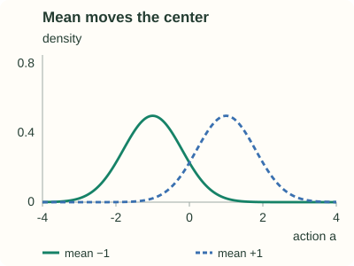
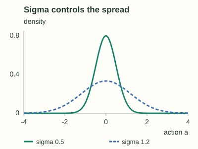
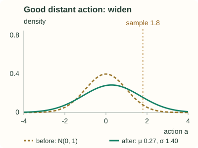
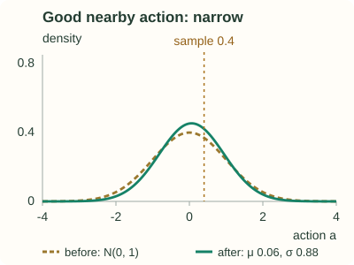

Gaussian Policies for Continuous Actions
Why discretizing is unsatisfying
The pendulum agent chose among three torques. The physical actuator has no such restriction: any torque between the limits is available. Discretizing that interval forces a trade-off in both directions.
| Discretization | Cost |
|---|---|
| Coarse (3 values) | the agent can never apply a gentle correction; fine control near the goal is impossible |
| Fine (100 values) | one preference and one feature block per action, no sharing between neighbours, and far more experience needed |
The deeper problem is that discretization throws away the structure of the action space. A torque of $1.98$ and a torque of $2.00$ do almost the same thing, yet a softmax over discrete actions treats them as two unrelated symbols and learns about them separately.
A policy that is a probability density
Three modelling choices are packed into that definition.
The mean is linear, and unconstrained. $\mu$ may be any real number, so a plain linear function of the features is fine — no softmax needed. Different states get different means, which is what makes this a policy rather than a fixed distribution.
The standard deviation is exponentiated. $\sigma$ must be strictly positive, and $\exp$ enforces that for every value of $\boldsymbol\theta_\sigma$ — the same trick the softmax used for probabilities, applied to one number instead of a vector.
The parameter count is independent of the action space. With $d$ state features the policy needs $2d$ parameters, whether the actions form an interval, a fine grid, or anything in between. The softmax needed $d$ per action.


Acting and exploring
Selecting an action is as cheap as it looks: compute $\mu(s,\boldsymbol\theta)$ and $\sigma(s,\boldsymbol\theta)$ with two dot products, then draw $A_t\sim\mathcal N\big(\mu(s,\boldsymbol\theta),\sigma(s,\boldsymbol\theta)^2\big)$ from any Gaussian random number generator.
Exploration lives entirely in $\sigma$, and, crucially, $\sigma$ is learned per state. Initialize $\boldsymbol\theta_\sigma$ so that $\sigma$ is large and the agent samples a wide range of torques; as learning identifies which actions pay, the updates shrink $\sigma$ and the policy concentrates. States where precision matters can end up with a tight distribution while states where the choice hardly matters keep a broad one. Once again the schedule is learned rather than imposed, exactly as the softmax preferences sharpened themselves in part 2.
The two log-gradients
The actor update is unchanged — $\boldsymbol\theta\leftarrow\boldsymbol\theta+\alpha^{\boldsymbol\theta}\delta\nabla\ln\pi(A_t\mid S_t,\boldsymbol\theta)$ — so all that is needed is the gradient for this parameterization. Take logs first:
Differentiating with respect to each block, using $\nabla_{\boldsymbol\theta_\mu}\mu=\mathbf x(s)$ and $\nabla_{\boldsymbol\theta_\sigma}\ln\sigma=\mathbf x(s)$, gives
Both are worth reading in words, because between them they express the entire learning behaviour of a Gaussian actor.
The mean chases good actions
$\big(a-\mu\big)$ points from the mean towards the action that was taken. Multiplied by $\delta$: a pleasant surprise drags the mean towards the sampled action, a disappointment pushes it away. The $1/\sigma^2$ factor makes the same displacement count for more when the policy is already narrow.
The spread tracks where the payoff is
The bracket compares the squared deviation with the current variance. It is positive when the action was farther out than typical and negative when it was closer in, so a good outcome from a distant action widens $\sigma$, and a good outcome from a typical action narrows it.
Why is one standard deviation the dividing line? Let $z=(a-\mu)/\sigma$: this measures how far the sampled action is from the mean in units of the current standard deviation. For the single feature $x(s)=1$ used in the figures, the update is
A positive change makes $\sigma$ larger; a negative change makes it smaller. With $\delta>0$:
- Farther than one standard deviation: $|z|>1$, so $z^2-1>0$. The action did better than expected out in the tail, so widening the distribution makes actions at that distance more likely.
- Closer than one standard deviation: $|z|<1$, so $z^2-1<0$. The action did better than expected near the center, so narrowing the distribution concentrates more probability there.
- Exactly one standard deviation: $|z|=1$, so this step leaves the spread unchanged.
If $\delta<0$, multiplying by it flips those signs: a disappointing distant action narrows the spread, while a disappointing central action widens it. This describes the spread component of a small update; the mean is updated separately at the same time.


In the left plot, $a=1.8$ gives $z^2-1=2.24$, so $\sigma'=e^{0.15(2.24)}\approx1.40$. In the right plot, $a=0.4$ gives $z^2-1=-0.84$, so $\sigma'=e^{0.15(-0.84)}\approx0.88$. Both start at $\mu=0$, $\sigma=1$, with $\delta=+1$; the mean also moves to $\mu'=0.15a$.
What does not change
Everything outside $\nabla\ln\pi$ is untouched by this switch:
That is a strong argument for the whole policy-gradient framing. The algorithm was never tied to the shape of the action set, and the one component that was — the policy — is exactly the component we made replaceable.
Where week 5 leaves us
Nine posts ago the policy was a rule applied to action values. It is now a first-class learned object with an objective of its own:
The same skeleton, with a clipped surrogate objective in place of the plain gradient step and a neural network in place of tile coding, is what drives modern policy optimization — the subject of the PPO series.
Check yourself
Practice
- Give two reasons discretizing a continuous action space is unsatisfying. reasoning
- Write the Gaussian policy and say why $\sigma$ is exponentiated but $\mu$ is not. recall
- Count the policy parameters for $d$ state features, and compare with a softmax over 50 discrete actions. calculation
- Derive both log-gradients from $\ln\pi(a\mid s,\boldsymbol\theta)$. derivation
- Say when a positive TD error widens $\sigma$ and when it narrows it. reasoning
- Implement a Gaussian actor-critic agent for continuous-torque pendulum swing-up. implementation